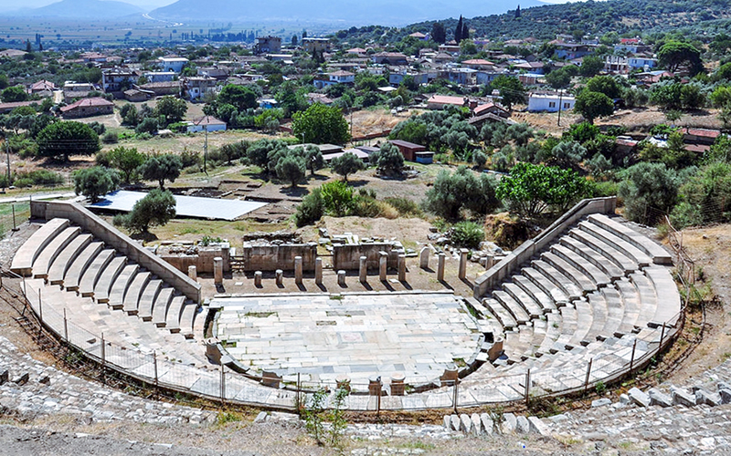

Doğu ile Batı arasında başlıca kapı durumunda olan Efes önemli bir liman kenti idi. Bu konumu Efes'in çağının en önemli politik ve ticaret merkezi olarak gelişmesini ve Roma Devrinde Asia eyaletinin başkenti olmasını sağlamıştır. Efes, antik çağdaki önemini yalnızca buna borçlu değildir. Anadolu'nun eski anatanrıça (Kybele) geleneğine dayalı Artemis kültünün en büyük tapınağı da Efes'te yer alır. Efes'teki Artemis Tapınağı dünyanın yedi harikasından biri olarak kabul edilir. Efes Anadolu'nun batı kıyısında, bugünkü Selçuk ilçesinin 3 km uzağında bulunan, daha sonra önemli bir Roma kenti olan antik bir Yunan kentiydi.
İzmir’in 45 km. doğusunda yer alan Torbalı’nın ilk yerleşim alanı, Torbalı Ovası’nın batısında Yeniköy ile Özbey köyleri arasında bir tepe üzerinde kurulan Metropolis antik kentidir.
Metropolis’ten ilk defa Avrupalı gezginler J.Spon ve G.Wheler 17 yy.’da bahsediyor. Bu gezginler, 1675 yılında yöreye gelmiş ve bugün Torbalı ilçesinin Yeniköy ve Özbey köyleri arasında yer alan harabelerin, Metropolis antik kentine ait olduğunu belirtmişler.
19. yy.’da ise İzmirli araştırmacı A.Fontier, Metropolis’de yazıtlar ve topoğrafya konularında yaptığı araştırma sonunda, Metropolis çevresindeki Çevlik ve Fetrek çaylarının antik isimlerini “Astraios” ve “Phyrites” olarak saptamış ve kent kalıntılarını kısaca tarif etmiştir.
